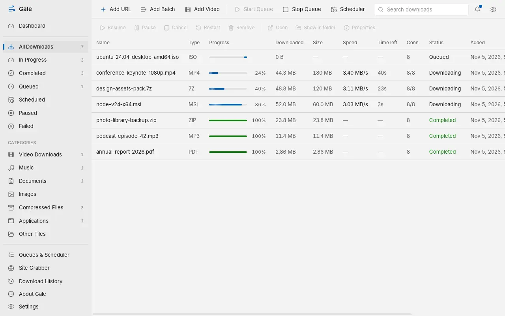
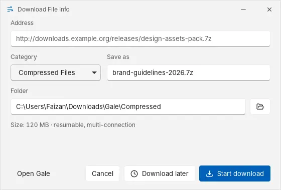
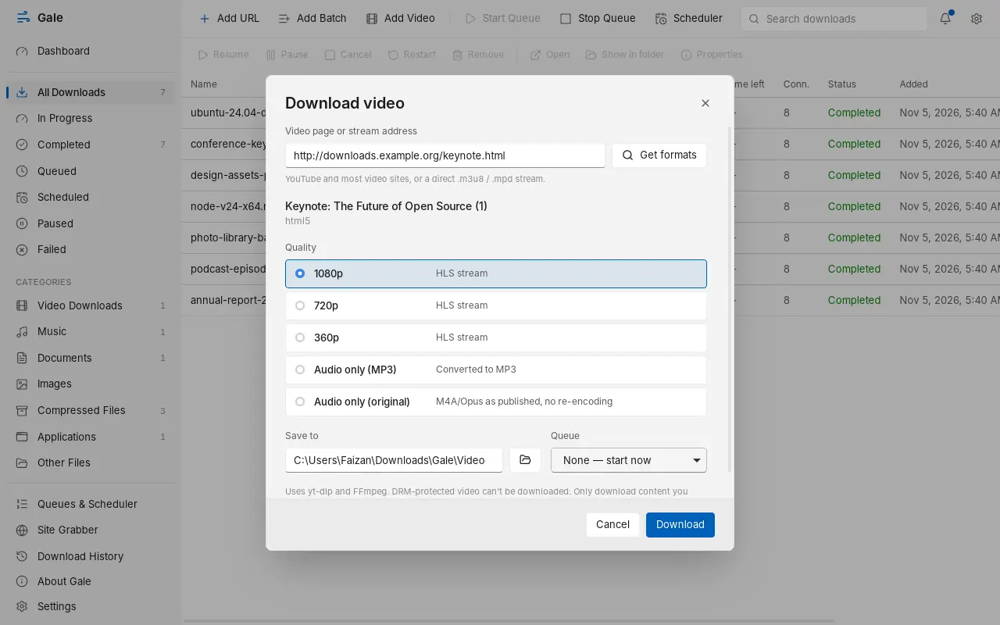
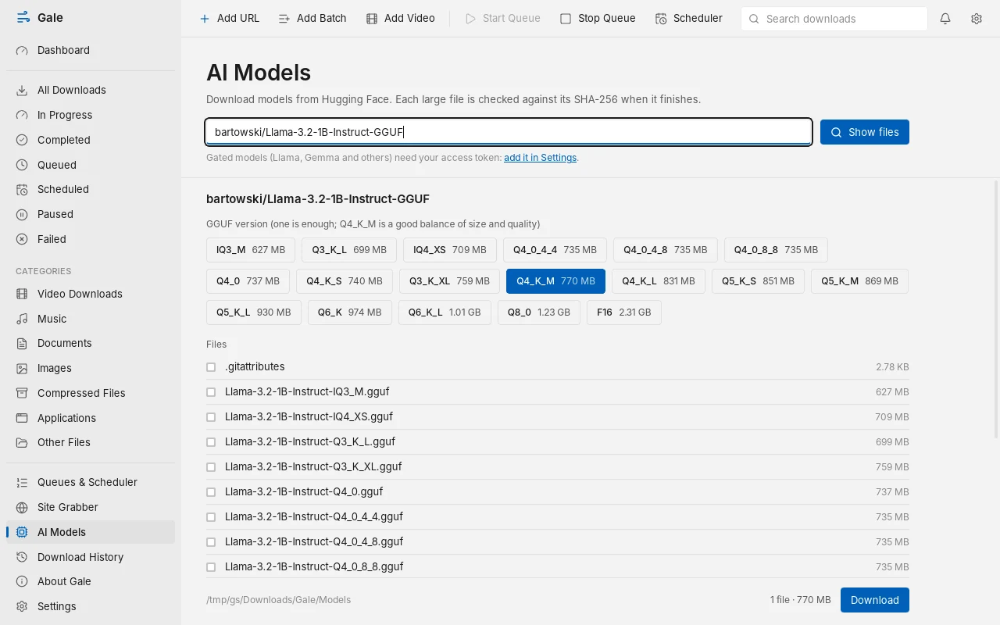

Queues and scheduler
Run downloads a few at a time, schedule them for the night, and shut down the PC when everything is done.
Gale is a free, open-source download manager for Windows, macOS and Linux. It splits each file across up to 32 connections, takes over downloads and videos from your browser, and continues after a crash, a restart or an expired link.

Gale splits the file into parts and keeps all connections working: when one finishes early it takes half of the largest part still left. If a server only allows a few connections, Gale notices, uses that many and remembers it.
Simulation: each bar is one connection fetching its own part of the file.
The extension for Chrome, Edge, Brave and Firefox hands downloads to Gale with the name, size and resume support already known. Signed-in downloads keep working: cookies go only to the app on your computer.

A Download button appears on the video. Pick the quality, or just the audio as MP3. Gale uses yt-dlp for over a thousand sites, joins video and sound into one file and keeps yt-dlp up to date.

Search for a model or paste its name. Gale shows each GGUF size (Q4_K_M is picked for you) or the weights with their configs, downloads them over many connections and checks every large file against Hugging Face's SHA-256.

Run downloads a few at a time, schedule them for the night, and shut down the PC when everything is done.
Give it a page and the file types you want; it follows links and lists every file to choose from. It respects robots.txt.
Magnet links and .torrent files open in Gale. Sharing stops when your download is done.
Follows your system theme, or pick one. Six accent colours in Settings.
Tray icon, a small progress window per download, notifications, and an optional clipboard watch for copied links.
No account, no analytics, no server of our own. Passwords and tokens stay in the system keychain. Privacy policy
Gale, aria2c 1.37.0 and curl 8.5.0 downloading the same files from a local test server. Every file was checked by SHA-256. Higher is better; each panel has its own scale.
What many CDNs and mirrors do; more connections, more speed.
Raw speed on this machine; one connection over loopback is the fastest path.
A fifth connection gets HTTP 503. The most possible is 8 MiB/s.
Each 64 KiB has a 2% chance that the connection drops.
Machine: Linux cloud VM, 2 CPUs, 7 GB RAM; client and server on the same machine (localhost). Measured 2026-11-26 with scripts/bench/run.sh; method and raw numbers in docs/benchmarks.md.
What this does not show: on a normal home line the line itself is the limit, and all three tools reach it. Extra connections help when a server slows down each connection.
| Test | Gale | aria2c | curl |
|---|---|---|---|
| A. 256 MiB, server slows each connection to 4 MiB/s | 57.0 MiB/s (4.5 s) | 59.5 MiB/s (4.3 s) | 4.0 MiB/s (64.0 s) |
| B. 1 GiB, no limits, local server | 370.1 MiB/s (2.8 s) | 388.1 MiB/s (2.6 s) | 1155.8 MiB/s (0.9 s) |
| C. 128 MiB, server allows 4 connections at 2 MiB/s | 7.9 MiB/s (16.3 s) | 7.7 MiB/s (16.7 s) | 2.0 MiB/s (64.0 s) |
| D. 256 MiB, unreliable server | 117.6 MiB/s (2.2 s) | 352.4 MiB/s (0.7 s) | gave up (connection dropped, error 18) |
Version 0.7.1, straight from GitHub. The file we recommend for your system is marked.
Windows 10 (1809+) or 11, 64-bit
SmartScreen may warn the first time because the installer isn't code-signed yet: More info → Run anyway.
macOS 11 or later · Apple Silicon and Intel
Not notarized yet: right-click Gale → Open the first time. Install FFmpeg with Homebrew for video.
64-bit · deb or rpm
Both register the browser helper for Chrome, Chromium, Edge, Brave and Firefox. Install ffmpeg for video.
Install the app first, then the extension. Chrome, Edge, Brave · Firefox · how to install
Every file has a .sha256 next to it on the release page.
Get-FileHash .\Gale_Setup_0.7.1.exesha256sum Gale_0.7.1_amd64.debAndroid: APK on the release page. Older versions and the source code: GitHub Releases.
Install the app, add the browser extension, done. The full guide covers every feature.
Approve the administrator prompt once. If SmartScreen says "Windows protected your PC", click More info → Run anyway: the installer isn't code-signed yet.
It sits in the tray and starts with Windows, so schedules and the browser extension always work.
msiexec /i Gale_0.7.1_x64.msi /qnWorks on Apple Silicon and Intel Macs with macOS 11 or later.
The app isn't notarized yet, so right-click Gale and choose Open once, or run:
xattr -dr com.apple.quarantine /Applications/Gale.appInstall FFmpeg; Gale fetches yt-dlp by itself.
brew install ffmpegsudo apt install ./Gale_0.7.1_amd64.debsudo dnf install ./Gale_0.7.1_x86_64.rpmFFmpeg comes from your distribution; Gale fetches yt-dlp by itself.
sudo apt install ffmpegOn Windows it's already in Gale's folder (Start menu → Gale → Install browser extension). On macOS and Linux unzip Gale-Chrome-Extension-0.7.1.zip.
Open chrome://extensions (or edge://extensions), turn on Developer mode, click Load unpacked and pick the folder.
Click the Gale icon in the toolbar. Start Gale once before the browser so it can register itself.
Firefox 142 or later. Start Gale once first: it registers its helper with Firefox.
Open about:debugging#/runtime/this-firefox, click Load Temporary Add-on and pick the zip. Firefox keeps it until it restarts; a signed version for addons.mozilla.org is on the way.
In about:addons → Gale → Permissions, turn on access to all websites so it can catch downloads.
Yes. Gale is free for personal and commercial use, with no ads, no trial and no paid version. It's open source under the MIT License. Donations are welcome but never required.
The whole source code is public on GitHub, so anyone can check what it does. Gale doesn't collect data, has no account and contacts only the servers you download from. The installer isn't code-signed yet, which is why SmartScreen may warn about it; you can compare the file's SHA-256 with the one on the download page.
Gale opens several connections to the server and downloads different parts of the file at the same time. Many servers limit the speed of each connection, so several together use more of your bandwidth. If a server allows only one connection, Gale uses one.
Yes, if the server supports it, which most do. Paused or interrupted downloads continue where they stopped, even after closing Gale or restarting the PC. Gale checks that the file on the server hasn't changed before continuing.
Chrome, Edge and Brave (version 116 or later) and Firefox 142 or later, on Windows, macOS and Linux. Other Chromium browsers that read Chrome's settings, such as Vivaldi and Opera, usually work too but aren't tested.
Yes, from version 0.7.0. Open AI Models, search or paste a model name, and pick a GGUF size or the weights. Gale checks every large file against the SHA-256 Hugging Face lists, can save straight into LM Studio's models folder, and uses your access token (kept in the system keychain) for gated models.
Gale can save videos from YouTube and most other video sites in the quality you choose. Downloading may be against a site's terms, and some content is protected by copyright: only download what you have the right to. DRM-protected video (Netflix, most paid services) can't be downloaded.
Yes. Click a magnet or .torrent link in the browser, paste a magnet link into Add URL, or open a .torrent file from your PC. Gale stops sharing a torrent once it has finished downloading. Peers in a torrent can see your IP address, and you are responsible for what you download and share.
Yes. Downloads that were running when Gale closed or the PC restarted start again by themselves when Gale starts, and a download that failed because the connection dropped is retried a few times. Turn this off in Settings → General.
Yes, from version 0.6.0: a .deb for Debian and Ubuntu, an .rpm for Fedora and openSUSE, and a .dmg for macOS 11 or later, on the download page. Windows-only parts (Defender scan, the setup's WebView2 install, automatic install of updates) are not in those versions.
Yes. In Settings → Network pick two or more networks, for example Ethernet and Wi-Fi. Each download's connections are spread over them, so the speeds add up when the server allows several connections. If one network drops, its connections move to the others.
No. Right-click it and choose Refresh download address. Paste a new link, or let Gale open the website so you can start the download again there; Gale checks it's the same file and goes on from where it stopped.
Only once, to install into Program Files for all users. Gale itself runs as a normal program.
On Windows, yes: from version 0.6.0 Gale tells you when a new version is out, and Install replaces the old version and restarts Gale (your list is kept). On macOS and Linux it opens the release page; install the new package the same way as the first time.
Yes, for Windows: the portable ZIP runs without installing. It registers its browser helper for your user and doesn't add itself to Windows startup unless you turn that on.
In Downloads\Gale by default. Change it in Settings → General, or per download in the Add download dialog. With category folders on, videos, music and documents go into their own subfolders.
Star the project on GitHub, tell a friend, report problems you find, or buy the developer a coffee.
Free, open source and ready for your next download.